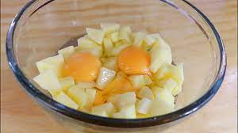

Hot Cakes de Papa
Ingredientes
- 4 papas, peladas y ralladas
- Suficiente de agua
- 3 huevos
- 1/2 tazas de queso americano, rallado
- 4 cucharadas de harina
- Suficiente de sal
- 1 cucharada de ajo en polvo
- 1 cucharada de cebolla en polvo
- Al gusto de mantequilla
- Al gusto de crema ácida, para decorar
- Al gusto de cebolla cambray, solo la parte verde, en rebanadas delgadas
Preparación
Paso 1: Sumerge las papas en un bowl con suficiente agua, deja reposar por 2 minutos y escurre. Coloca en una charola con papel absorbente y deja secar.
Paso 2: Coloca la papa en un bowl y agrega el huevo, el queso americano, la harina, la sal, el ajo en polvo y la cebolla en polvo. Mezcla y forma los hot cakes.
Paso 3: Fríe los hot cakes salados uno por uno en una sartén a fuego medio con suficiente mantequilla. Retira y reserva.
Paso 4: Sirve los hot cakes y decora con crema ácida y cebolla de cambray.